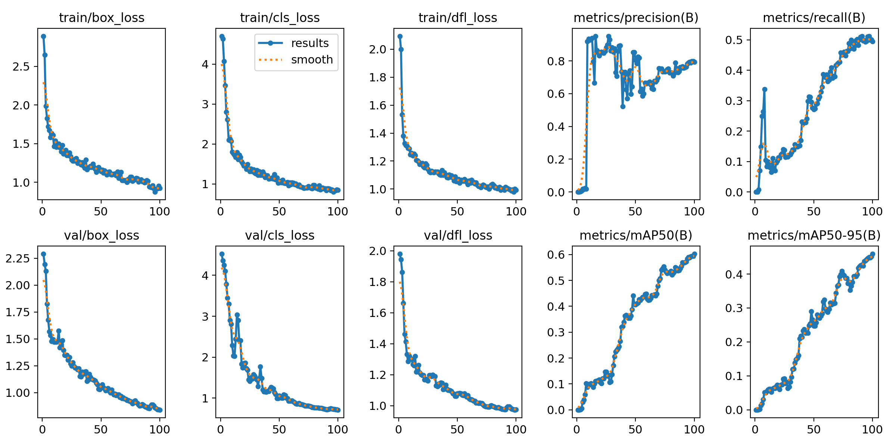
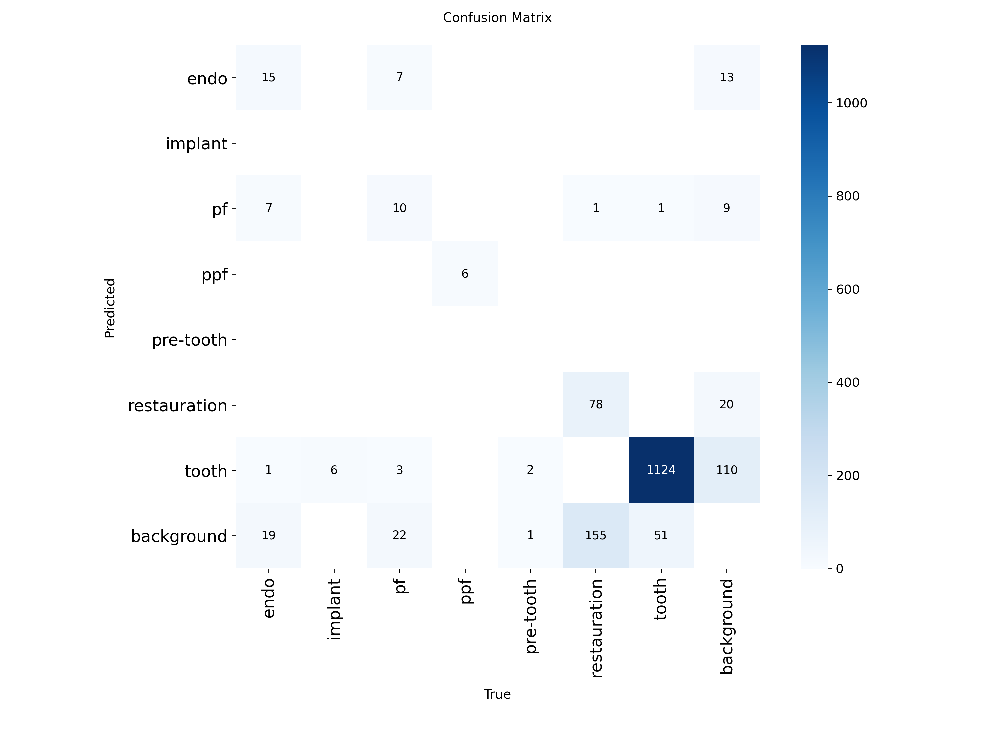
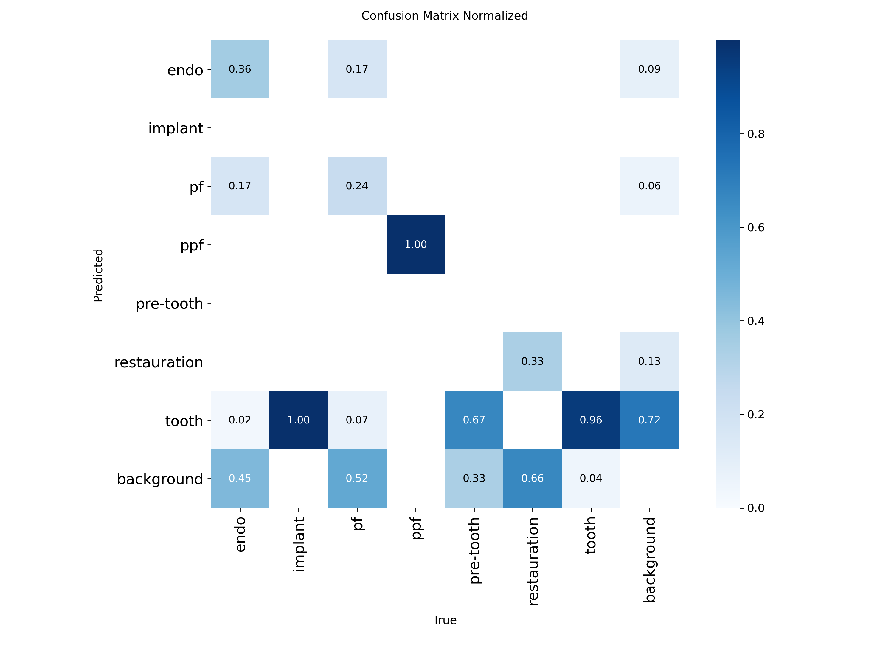
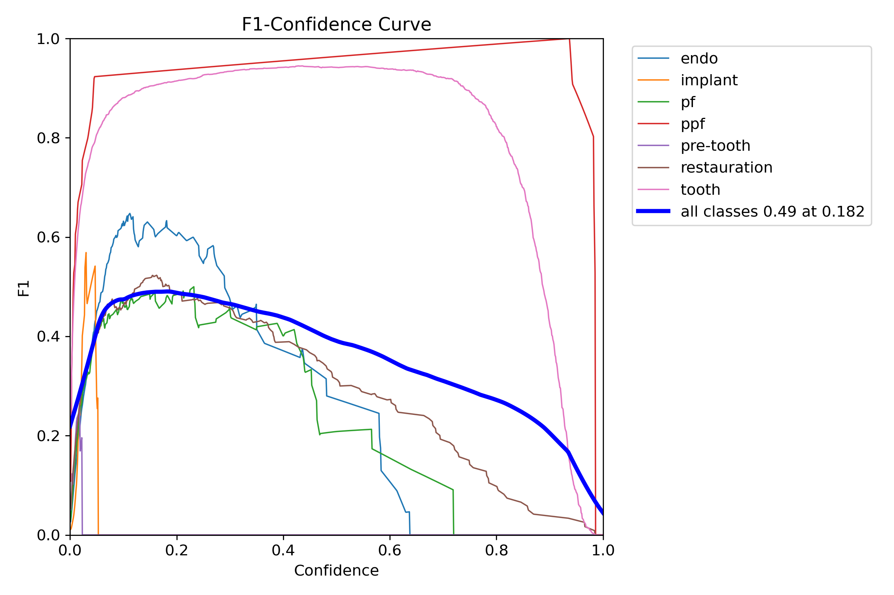

📈 Curvas de Convergência

Treinamento vs. Validação
As curvas de box_loss e cls_loss demonstram uma descida consistente, indicando que o modelo aprendeu a localizar e classificar as estruturas sem sinais óbvios de overfitting severo até a época 100.
🎯 Matriz de Confusão

Valores Absolutos

Normalizada
Análise Técnica: O modelo apresenta performance excepcional na classe
tooth (0.96) e ppf (1.00). Note o desafio na distinção entre implantes e dentes naturais devido à morfologia similar.
🧬 Equilíbrio Precisão/Recall

F1-Confidence Curve
O pico de F1-Score médio de 0.49 ocorre com um limiar de confiança de 0.182.
📊 Desbalanceamento

Análise da frequência de instâncias por classe, evidenciando a predominância de tooth (1176 instâncias) no conjunto de dados.